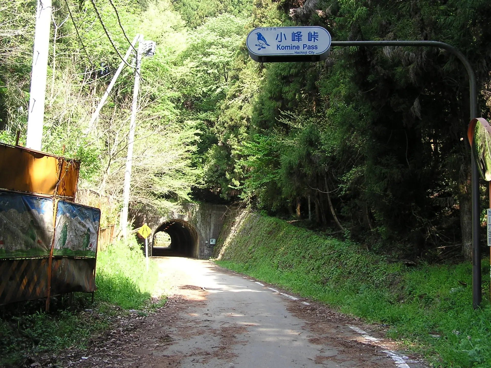
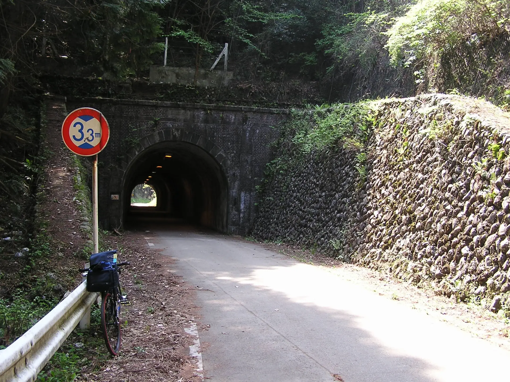
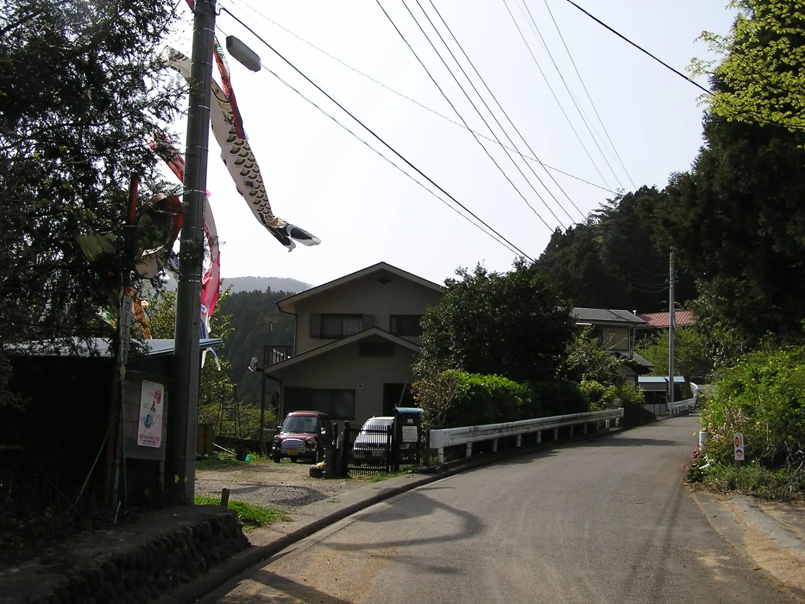
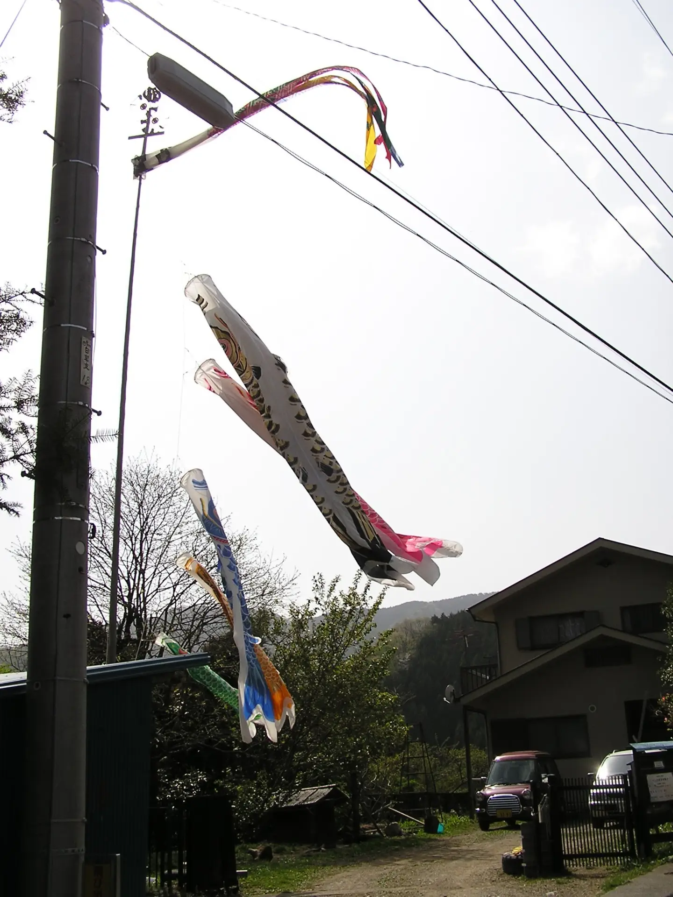
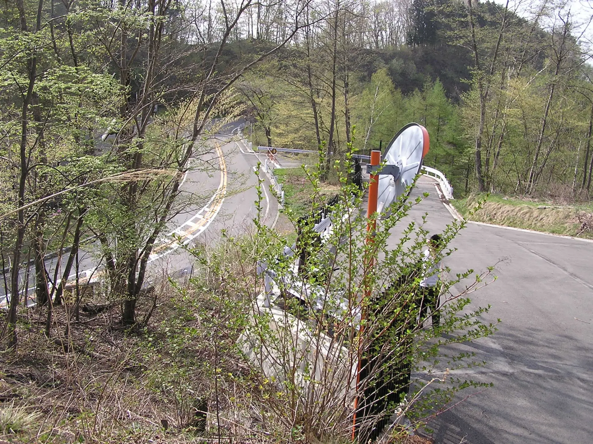
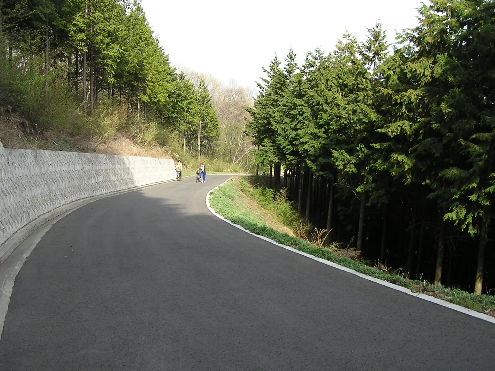

2005年4月29日 風張峠自転車ツーリング
大学のサイクリングクラブの新歓ランで、東京都で一番高い峠、風張峠に行った。
集合場所は武蔵五日市駅だったが、その前に個人的に小峰峠（小峰トンネル）旧道に立ち寄った。
高校時代はロードバイクに乗ることが多かったが、大学サイクリングクラブではキャンプツーリング向きの自転車が必要なので、最初に買ったマウンテンバイク、GIANT XtC840が復活した。
大学のサイクリングクラブのクラブランの写真なので、どうしてもほかの部員を撮影したものがあり、掲載できるものが少ない。
武蔵五日市駅で集合してから上りにかかるまでの間の写真はなかった。
写真を見ていると、ほかの1年生は普通に上りで押していたりする。いっぽう自分は経験者なので舐めプしていた。大学に入ってから人生がおかしくなったので、正直このあたりが自分の人生のピークだった可能性がある。
画像は、風張林道に折り返した後に上る途中のきのこセンターあたりの写真。
4月29日ということでこいのぼりが上がっている。
風張林道経由で風張峠に着いた。
マジでクソガキだったので、一度下って他の1年生を迎えに行って並走するという最悪ムーブをやった。本当にダメすぎる。
当時の風張林道の最上部は、改修されたばかりでとてもきれいだった。
風張林道側の風張峠鞍部。

修正しすぎてなにがなんだかわからないが大学サイクリングクラブの集合写真。当時は真ん中に写るようなキャラだった。

2025年12月19日記事公開